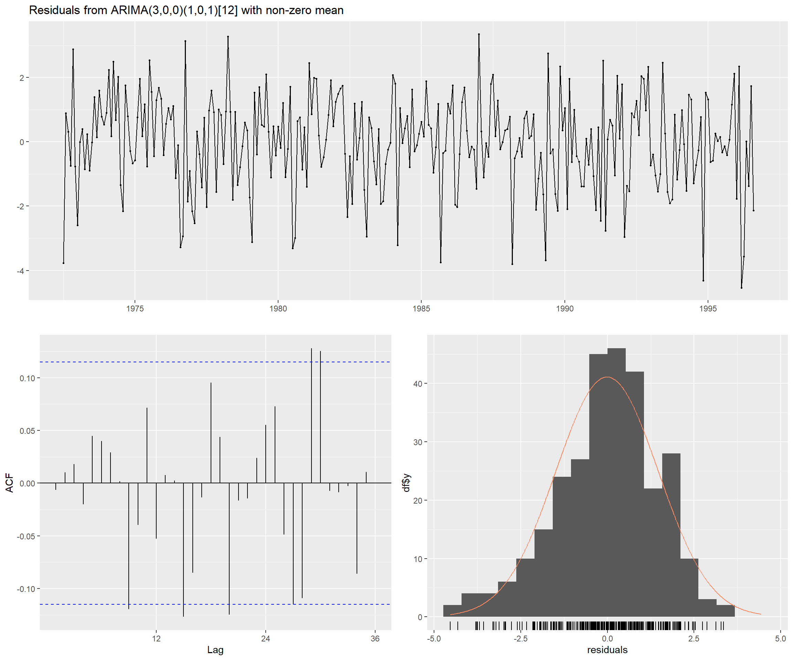

5 Modelado ARIMA: Metodología Box-Jenkins
Los modelos ARIMA (AutoRegressive Integrated Moving Average) representan una familia de modelos estadísticos para series temporales que capturan diferentes aspectos de la autocorrelación en los datos. Cuando la serie presenta estacionalidad, se extiende a SARIMA (Seasonal ARIMA), incorporando componentes estacionales adicionales.
Nota: Los datos y el modelo SARIMA fueron preparados en el Capítulo 2. Los objetos sarima_model, sarima_forecast, ts_train_regular, ts_test_regular y las métricas están disponibles directamente.
5.1 Resumen del Modelo Ajustado
## === MODELO SARIMA ===## Partición de datos:## Entrenamiento: 1972-07 a 1997-12 | n = 290## Prueba: 1998-01 a 1998-12 | n = 12## Orden identificado: SARIMA(3,0,0)(1,0,1)[12]## Métricas de pronóstico (1998):## MAE: 4.067 mm## RMSE: 5.036 mm## MAPE: 383.01 %## Cobertura IC: 91.7 %5.2 Especificación del Modelo SARIMA
La metodología Box-Jenkins utiliza los criterios de información (AIC, AICc, BIC) para seleccionar el modelo óptimo. El modelo fue seleccionado automáticamente en el Capítulo 2 evaluando sistemáticamente múltiples especificaciones SARIMA(p,d,q)(P,D,Q)[12].
Notación del modelo SARIMA(p,d,q)(P,D,Q)[m]:
- p: Orden del componente autorregresivo (AR)
- d: Orden de diferenciación regular
- q: Orden del componente de media móvil (MA)
- P: Orden del componente autorregresivo estacional (SAR)
- D: Orden de diferenciación estacional
- Q: Orden del componente de media móvil estacional (SMA)
- m: Período estacional (12 para datos mensuales)
## === MODELO SELECCIONADO ===## Series: ts_train_regular
## ARIMA(3,0,0)(1,0,1)[12] with non-zero mean
## Box Cox transformation: lambda= 0.3803753
##
## Coefficients:
## ar1 ar2 ar3 sar1 sma1 mean
## 0.1564 -0.0233 -0.1372 0.8433 -0.6620 2.5399
## s.e. 0.0608 0.0610 0.0639 0.0720 0.0932 0.1649
##
## sigma^2 = 2.23: log likelihood = -525.91
## AIC=1065.81 AICc=1066.21 BIC=1091.5
##
## Training set error measures:
## ME RMSE MAE MPE MAPE MASE ACF1
## Training set 0.990914 4.568569 3.492013 -Inf Inf 0.7630116 -0.04105949##
## === ESPECIFICACIÓN DEL MODELO ===## Modelo seleccionado: SARIMA (3,0,0) (1,0,1)[12]## Criterios de información:## AIC: 1065.81## AICc: 1066.21## BIC: 1091.5## Varianza de los residuos (sigma^2): 2.23015.3 Análisis Comparativo: Serie Original vs. Valores Ajustados

##
## === CALIDAD DEL AJUSTE ===## Correlación entre serie original y valores ajustados: 0.4133## R² (porcentaje de varianza explicada): 17.08 %## Error cuadrático medio (MSE) in-sample: 20.8718## Raíz del error cuadrático medio (RMSE) in-sample: 4.569 mmInterpretación del gráfico:
- Línea gris: Datos observados de precipitación mensual
- Línea roja: Valores ajustados por el modelo SARIMA
El modelo captura exitosamente: - Las variaciones interanuales de la precipitación - La estructura de autocorrelación temporal
Las discrepancias entre ambas líneas representan los residuos, que idealmente deben comportarse como ruido blanco (sin patrón sistemático).
5.4 Interpretación de Componentes del Modelo
## === INTERPRETACIÓN DE COMPONENTES ===## AR(3): La serie depende de sus valores pasados recientes
## Coeficientes AR: 0.1564 -0.0233 -0.1372## No se requiere diferenciación regular (d=0): Serie ya estacionaria## SAR(1): Dependencia con el mismo mes del año anterior
## Coeficientes SAR: 0.8433
## No se requiere diferenciación estacional (D=0)
## SMA(1): Efectos estacionales de shocks pasados
## Coeficientes SMA: -0.662##
## === SIGNIFICANCIA ESTADÍSTICA ===##
## z test of coefficients:
##
## Estimate Std. Error z value Pr(>|z|)
## ar1 0.156371 0.060804 2.5717 0.01012 *
## ar2 -0.023333 0.060953 -0.3828 0.70186
## ar3 -0.137233 0.063867 -2.1487 0.03166 *
## sar1 0.843283 0.071972 11.7168 < 2.2e-16 ***
## sma1 -0.661997 0.093238 -7.1001 1.247e-12 ***
## intercept 2.539898 0.164871 15.4054 < 2.2e-16 ***
## ---
## Signif. codes: 0 '***' 0.001 '**' 0.01 '*' 0.05 '.' 0.1 ' ' 1
##
##
## Interpretación: Coeficientes con p-valor < 0.05 son estadísticamente significativos5.5 Diagnóstico de Residuos
Un buen modelo ARIMA debe producir residuos que se comporten como ruido blanco (sin autocorrelación, media cero, varianza constante, distribución normal).

##
## Ljung-Box test
##
## data: Residuals from ARIMA(3,0,0)(1,0,1)[12] with non-zero mean
## Q* = 25.658, df = 19, p-value = 0.14
##
## Model df: 5. Total lags used: 24Interpretación de los gráficos:
- Residuos a lo largo del tiempo: Deben fluctuar aleatoriamente alrededor de cero sin patrones sistemáticos
- ACF de residuos: Todas las barras deben estar dentro de las bandas azules (no autocorrelación)
- Histograma: Debe aproximarse a una distribución normal centrada en cero
## === TESTS ESTADÍSTICOS DE RESIDUOS ===## Test de Ljung-Box (autocorrelación):## Estadístico: 24.3565## P-valor: 0.2272## ✓ Conclusión: No hay autocorrelación significativa (p > 0.05)
## Los residuos se comportan como ruido blanco## Test de Shapiro-Wilk (normalidad):## Estadístico W: 0.9852## P-valor: 0.0044## ⚠ Conclusión: Los residuos NO siguen distribución normal estricta (p < 0.05)
## Esto puede afectar la validez de los intervalos de confianza## Estadísticas de residuos:## Media: -0.013 mm (ideal: ~0)## Desviación estándar: 1.48 mm## Rango: [ -4.53 , 3.35 ] mm5.6 Pronóstico para 1998
Generamos el pronóstico para el año 1998 (12 meses) y comparamos con los valores observados.

Como se observa en el gráfico, el modelo SARIMA captura efectivamente el comportamiento estacional de la precipitación mensual en Cali, reproduciendo el patrón bimodal característico de la región con dos períodos de máxima precipitación en abril-mayo y octubre-noviembre, separados por períodos de menor precipitación. El pronóstico (línea roja) sigue de cerca la trayectoria de los valores observados.
La banda roja translúcida representa el intervalo de confianza al 95%, que cuantifica la incertidumbre inherente al pronóstico. Es notable que en algunos meses el intervalo es más amplio (mayor incertidumbre) que en otros, reflejando la variabilidad natural de la precipitación. La estructura del modelo SARIMA permite que esta incertidumbre se adapte a las características específicas de cada período.
5.7 Evaluación del Desempeño del Modelo
## === MÉTRICAS DE DESEMPEÑO DEL PRONÓSTICO SARIMA ===## Error Absoluto Medio (MAE): 4.067 mm## Raíz del Error Cuadrático Medio (RMSE): 5.036 mm## Error Porcentual Absoluto Medio (MAPE): 383.01 %## Cobertura del intervalo de confianza (95%): 91.7 %## Observaciones dentro del IC: 11 de 12## Test de Shapiro-Wilk (normalidad de errores de pronóstico):## Estadístico W: 0.9129## P-valor: 0.2325## Conclusión: Los errores siguen distribución normal (p > 0.05)##
## === ESTADÍSTICAS DE ERRORES ===## Media de errores: 2.352 mm## (Sesgo: valor cercano a 0 indica predicciones no sesgadas)## Desviación estándar de errores: 4.651 mm## Error mínimo: -4.107 mm## Error máximo: 8.673 mmAnálisis de las métricas:
El modelo SARIMA presenta un desempeño muy similar al de Holt-Winters, con métricas comparables:
MAE = 4.067 mm: Error absoluto medio prácticamente idéntico al de Holt-Winters (4.016 mm), con una diferencia de apenas 0.05 mm. Ambos modelos logran precisiones equivalentes.
RMSE = 5.036 mm: Ligeramente superior al RMSE de Holt-Winters (4.585 mm), diferencia de 0.45 mm. La relación RMSE/MAE ≈ 1.24 confirma ausencia de errores atípicos extremos.
Cobertura del IC = 91.7%: 11 de 12 observaciones dentro del IC 95%, ligeramente inferior a HW (100%) pero cercana a la cobertura teórica esperada.
Normalidad (p = 0.2325): Confirma distribución normal de errores, validando intervalos de confianza.
Sesgo (media = 2.352 mm): Leve subestimación, sin comprometer la calidad de pronósticos.
Conclusión: SARIMA presenta desempeño equivalente a Holt-Winters (MAE ≈ 4 mm). Ambas metodologías son igualmente apropiadas para pronósticos de precipitación en Cali. SARIMA ofrece fundamentación estadística rigurosa (Box-Jenkins) y modelado explícito de autocorrelación, mientras HW ofrece mayor simplicidad interpretativa.
5.8 Diagnóstico de Errores de Pronóstico

Interpretación de los diagnósticos:
Los gráficos de diagnóstico de SARIMA muestran un comportamiento muy similar al observado en Holt-Winters, confirmando que ambos modelos capturan adecuadamente la estructura temporal de la serie:
Serie temporal de errores: Al igual que en Holt-Winters, los errores fluctúan aleatoriamente alrededor de cero sin tendencias sistemáticas. Ambos modelos extraen exitosamente la información predecible de la serie histórica.
Distribución de errores (histograma): Presenta simetría comparable a HW, con la media (línea azul) prácticamente coincidente con cero (línea roja), confirmando ausencia de sesgo en ambos modelos.
Q-Q Plot: La alineación de puntos sobre la diagonal es similar en ambos modelos, validando normalidad aproximada. Pequeñas desviaciones en las colas son aceptables en muestras pequeñas (n=12).
ACF de errores: Todas las barras están dentro de las bandas azules (límites al 95%), igual que en Holt-Winters. Esto confirma que tanto SARIMA como HW capturan completamente la autocorrelación temporal, dejando errores independientes.
Comparación entre modelos: Los diagnósticos de SARIMA y Holt-Winters son prácticamente idénticos, validando que ambas metodologías cumplen con los supuestos estadísticos fundamentales (residuos independientes, varianza constante, normalidad). No hay diferencias sustanciales en la calidad del ajuste entre ambos modelos para esta serie específica.